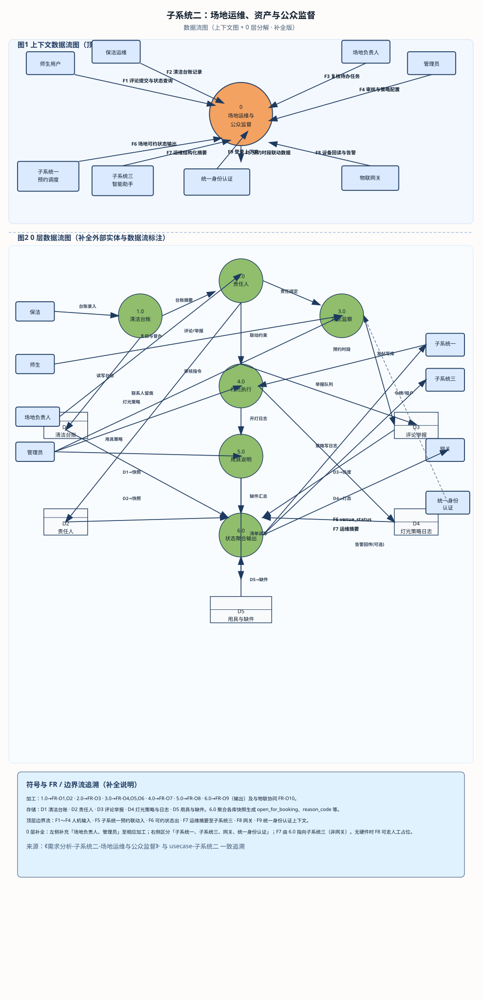
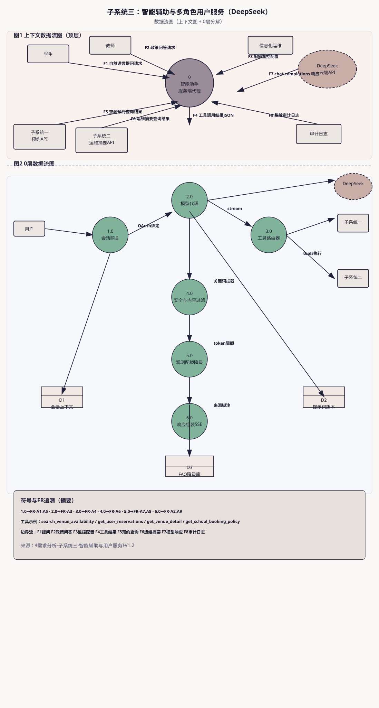

依据《需求分析》三份子系统文档绘制：各含上下文图（顶层）与0层分解图。单独 SVG 可与课程报告直接嵌入。
文件：dfd-subsystem-1-booking.svg
dfd-subsystem-1-booking.svg
文件：dfd-subsystem-2-operations.svg
dfd-subsystem-2-operations.svg

文件：dfd-subsystem-3-assistant.svg
dfd-subsystem-3-assistant.svg
